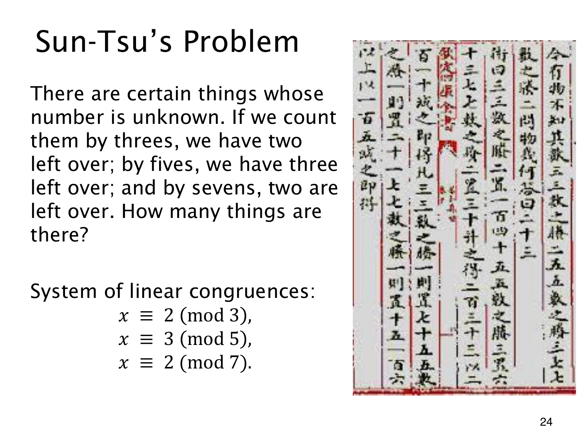

L1.13 · 第 24 页讲解原文
查看这一页课件

孙子问题要求三个条件同时成立
一批物品三个一组余 2，五个一组余 3，七个一组余 2。设总数为 x，同一个未知数要满足
x≡2(mod3),x≡3(mod5),x≡2(mod7).
先用第一式写 x=2+3k。代入第二式，得 3k≡1(mod5)；模 5 下 3 的逆元是 2，所以 k=2+5t，从而 x=8+15t。
再代入模 7 的条件，有 1+t≡2(mod7)，即 t=1+7u。于是全体整数解为
x=23+105u,u∈Z.
最小正解是 23，可检查 23=7⋅3+2=4⋅5+3=3⋅7+2。但没有总数上限时，128,233 等也都符合。唯一确定的是模 3⋅5⋅7=105 的余数类，不能仅凭题中的余数就认定总数必为 23。